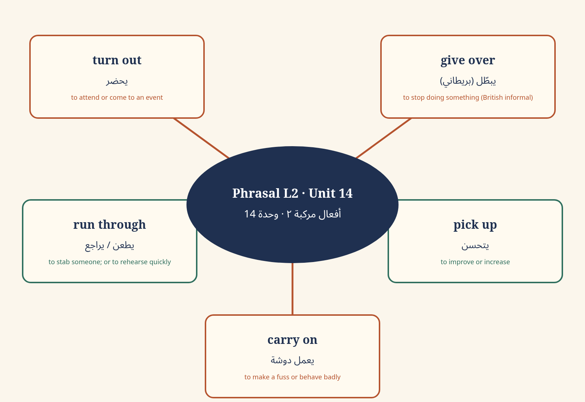

آداب الإنجليزية
: قواعد وجرامر وشعر وأساطير
⭐
0
🔥
استمر!
🧩
التنين، الوحدة 14: turn out، give over، run through، pick up، carry on
5 أفعال مركبة
التنين
📄 حمّل PDF الدرس
📝 ملخص الدرس (عربي) PDF
📝 Lesson Summary (English) PDF
🧠 الخريطة الذهنية PDF
📄 ملف الدرس PDF
🧠 شوف الخريطة الذهنية للدرس

→
الدرس اللي قبله
كل دروس الكورس
الدرس اللي بعده
←